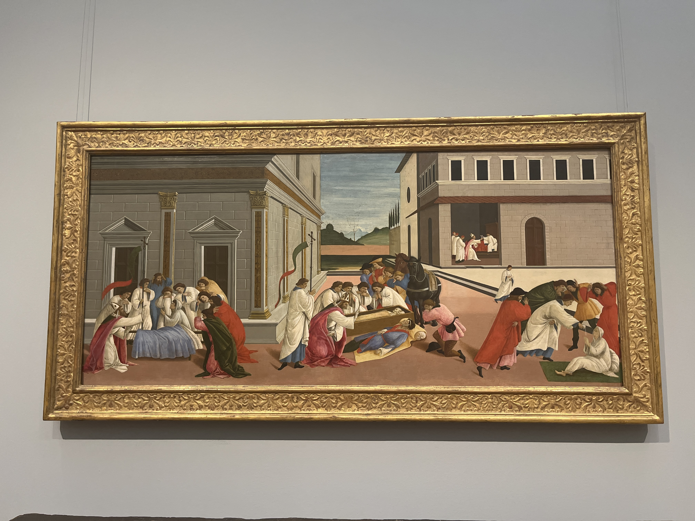
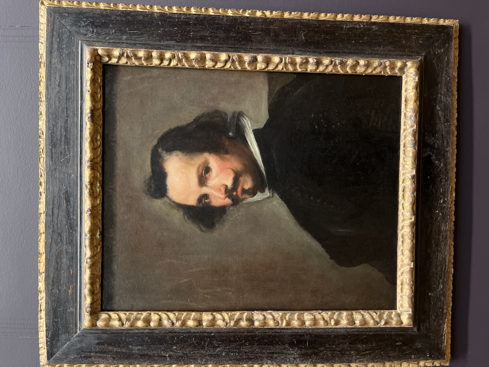

时隔两年，又来NYC看看，这次主要是去MET好好参观，尽量多看些藏品。像什么自由女神像、帝国大厦、百老汇，都去过了，也没什么再去一次的冲动；至于MOMA，现代艺术了解地着实有限，还是下次再去吧。
一下公交车，NYC的马路让我颇感生猛。作为一个Bostoner，我很难会在不守交规这方面被震撼，但NYC曼岛上各个都是牛人啊，车辆这么多，也敢闯红灯，着实厉害。
进McDonald‘s想休息休息，顺便上个卫生间，不巧阿姨正在打扫，遂在外面看书等待，结果没过两分钟，阿姨直接把我喊女厕所去了。我其实可以等等的，但看她略微烦躁的表情只好如她所愿。没想到里面还有人在洗手，我拿着可乐，匆匆进去，不禁大为感慨：NYC还是生猛啊，虽然hiking的时候上厕所都是因地制宜，但在城市里上女厕还是头一遭。最为搞笑的是阿姨出来还问我消费了没，好家伙，真有意思，如此负责任，希望可以原谅我把可乐落卫生间了。
今天看的MET主要是从middle era到文艺复兴到巴洛克到洛可可都看了下，代表人物尽量地拍了一下。不过有些时代不太了解，可能有所遗漏。
Renaissance
Giotto di Bondone 乔托
然而他并不喜欢僵硬的拜占庭艺术绘画风格（ltalo-Byzantine），他认为宗教人物如圣母和耶稣，也是有血有肉的人，因此他特别加强了人物画中的肌理和阴影感，也将过去平板的金或蓝色背景改为透视画法的一般风景。此突破获得宗教界的喜好，使他大受欢迎，并被委托其他很有名的画。
其中圣方济的宗教壁画在西方绘画史上占有极重要的地位，史家以此认为乔托是第一个企图画出有透视感和深度空间的画家。
从下往上看
Florence
The Adoration of the Magi. The sophisticated depiction of the stable, viewed from slightly below, and the columnar solidity of the figures are typical of Giotto, considered the founder of Italian painting. The impetuous action of the kneeling king, who picks up the Christ Child, and Mary’s expression of concern translate the biblical account into deeply human terms.
The Home in Renaissance Italy
For noble Italian families, the Renaissance home was a richly decorated space brimming with art. Objects celebrated marriages, served as portals to religious devotion, entertained through the telling of history and myth, and pictured ancestors and family members. People interacted with these objects, using some as instruments for meditation and prayer, and others for practical purposes— as with marriage chests (cassoni), wedding gifts that doubled as storage and seating. Increasingly popular were portraits of children, which suggests that parents doted on them much as they do today.
Alongside this ran a taste for the distant and unfamiliar in the form of imports supplied through thriving international trade. Products like ceramics, central to the social activity of dining, were status symbols, especially when they came from faraway places. While this kind of abundant variety was reserved for the wealthy, household inventories show that nearly every home, even the most modest, had an image of the Madonna and Child hanging on its walls.
The Chess Players, ca. 1475
Liberale da Verona
Italian, Verona ca. 1445-1527/29 Verona
Scene from a Novella, ca. 1475
Tempera on wood
These companion panels are from the front of a chest (cassone) and show two episodes from an unidentified story, or novella. In one, a youth is smitten by a maiden who appears at a window and seems to gesture for him to join her inside. In the other, they engage in an erotically charged game of chess where she is about to lose. Both were common themes in the amatory literature of the Renaissance. The figures’ bleached blond, frizzy hair was the height of fashion in fifteenth-century Siena. Liberale was a brilliant illuminator and worked on choirbooks in Siena between 1467 and 1476.
Botticelli (Alessandro di Mariano Filipepi)
Italian, Florence 1444/45-1510 Florence Three Miracles of Saint Zenobius, ca. 1500
Tempera on wood
This panel, likely originally part of a daybed or wainscoting for a marriage chamber, belongs to a series illustrating the life of Zenobius, the fifth-century bishop of Florence. Botticelli had come under the influence of Christian reformer Girolamo Savonarola and began painting austere religious narratives with a sense of urgency and foreboding. Here, the saint feverishly rushes across a surreal townscape, raising the dead. At left, he meets a funeral procession and resurrects a dead youth. At center, he raises a man killed while transporting a casket of relics. At right, Saint Eugenius receives water and salt blessed by Zenobius, who then hastens across the square to revive a dead relative.
netherland从文艺复兴学到的明暗对比
Gerard David
Netherlandish, Oudewater ca. 1455-1523 Bruges The Rest on the Flight into Egypt,
In a tiny background scene, the Holy Family emerges from the forest, en route to the contemporary Netherlandish town at the left. In the foreground Mary nurses her child in a moment of repose on their arduous journey, which the viewer is meant to follow visually. David achieved in this painting a remarkable balance of color and a serene sense of light and atmosphere. His awareness of Italian Renaissance conventions is evident in the pyramidal motif of the Virgin and Child and the use of chiaroscuro to convey the volume of the figures.
Vinice
bellini
光影与色彩的运用：贝利尼通过精细的光影处理，尤其是在面部、衣物和景物的刻画上，表现出自然界的光线效果，使人物更具立体感。
温暖柔和的色调：他的色彩渐变柔和，充满光泽，特别是在人物的肌肤、衣物和背景景观中的自然表现上，体现了威尼斯学派特有的温暖色调。
人物与情感表现：
宗教题材与自然背景
Titian
男人臣服女人

Titian and Workshop
Oil on canvas
Venus, the goddess of love, interrupts her music making to be crowned with a wreath of flowers by Cupid. An admiring, well-dressed youth playing the lute —the quintessential instrument for love madrigals— gazes at her raptly. In the background nymphs and satyrs dance to the music of a shepherd.
Titian and his followers were known for capturing the complex personalities of female subjects. In this painting, Venus is more than an object of desire. In her devastatingly confident pose, she becomes a symbol of the power of women over men. Titian painted this amatory theme multiple times. This one was left unfinished except for the landscape background, which is fully painted by the artist.
Tales from Ovid’s Metamorphoses inspired Titian to paint what he called poesie, or poetry in paint. Here, Venus tries to stop her lover from departing for the hunt, fearing— correctly—that he would be killed.
The mood of sensuality, conveyed by the beautiful depiction of Venus, seen from the back, enhances the viewer’s sense of the tragic end to this story, expressed through their exchanged glances and the frightened Cupid. Titian’s workshop made multiple versions of this composition, but this one is of exceptional quality and was painted by Titian himself.
Dating to about 1508, this devotional painting is one of Titian’s earliest and shows the artist experimenting with ways to capture the bond between the Madonna and Christ Child. Technical study has revealed that Titian originally arranged the figures sitting in a more traditional upright pose in the center of the canvas.
By relaxing their posture, he afforded not a view of two divine icons but a glimpse of an intimate moment of shared affection.
德国
宗教艺术变多
The Reformation and the Age of Dürer
The German-speaking lands of the Holy Roman Empire were at the center of the political, religious, and social upheavals that convulsed Europe in the 150os.
Paradoxically, this time was also a golden age for German art. Some art historians have called this era “the age of Dürer, due to the contributions of Albrecht Dürer, who became an international artistic celebrity in his own lifetime. As a painter, printmaker, and art theorist, he shaped future generations of followers while serving as a conduit for Italian ideas and techniques that he encountered on his extensive travels.
Albrecht Dürer
German, Nuremberg 1471-1528 Nuremberg Virgin and Child with Saint Anne, probably 1519
Oil on linden
Dürer traveled to Italy from 1505-7, in particular to Venice, where he drew many inspirations for his art.
Venetian painting encouraged Dürer’s interest in rich color and meticulous attention to detail, as well as simplicity of form. Dürer’s haunting devotional painting depicts Saint Anne, the Virgin Mary’s mother, who was particularly venerated in Germany, with the Virgin and Child. Anne’s hand on her daughter’s shoulder takes on a consolatory meaning, and her distant gaze suggests a premonition of Christ’s Passion.
Although this panel’s date and monogram were added later, the date is likely accurate.
Raphael
还在学习中

By contrast, the weighty male saints reflect the progressive style developed by Leonardo da Vinci and Fra Bartolomeo that Raphael had just begun to study in Florence. The lunette above the main panel depicts God the Father holding a globe and delivering a blessing between two angels and two seraphim.

柯勒乔（又译科雷吉欧）Correggio
创作出16世纪最蓬勃有力和奢华的画作。他的画风酝酿了巴洛克艺术，而其优美的风格又影响了18世纪的法国。他是文艺复兴时期帕尔马画派的创始人，创作出16世纪最蓬勃有力和奢华的画作。他的画风酝酿了巴洛克艺术，而其优美的风格又影响了18世纪的法国。
Correggio was one of the most original painters of the Renaissance, and in this early picture he explored ideas put into circulation by Leonardo da Vinci, seeking a haunting ambiguity of expression and a soft, enveloping light.
landmark painting
Origins of Landscape
Landscape emerged as an independent subject of European paintings in the sixteenth century. One starting point for this gradual process was the so-called world landscapes of Joachim Patinir, where the foreground figures playing out religious narratives are almost overwhelmed by their expansive natural backdrops. Over the years, specialists in painting human figures began seeking out skilled landscape artists as collaborators.
At a time when most of the population of Europe lived in rural areas and labored in agriculture, landscape painting offered artists a way to explore the cycle of the seasons and appeal to the landowning aristocracy through harmonious depictions of harvesting and hunting,
Few, if any, of these paintings embrace strict topographical accuracy.
Joos van Patinir
文艺复兴时期的早期画家，尤其被认为是佛兰德文艺复兴的代表人物之一，尤其以风景画闻名。
Patinir的风景画以其精细的自然景观和戏剧性的背景著称，具有高度的象征意义。他的画作常结合宗教题材，描绘了如《天堂与地狱》这样的宗教主题，同时加入了大规模的自然景观元素。Patinir是早期使用全景式风景的画家之一，这一技巧在文艺复兴后期和巴洛克时期的画家中得到了广泛发展。
While essential to the work’s function as altarpiece, these stories also provide the pretext for Patinir’s panoramic landscape, the subject matter that made him famous. In this example he made characteristic use of atmospheric perspective, shifting the color palette from green to blue as the vista recedes.
1560年，日常绘画
A revolution in the subject matter of European art occurred around the year 1560. While scenes from the Bible and ancient mythology continued to enjoy the highest critical prestige, many painters in this period responded to controversies about devotional images and a growing art market by specializing in new kinds of subject matter —most notably, scenes of everyday life, often referred to as genre painting.
埃尔 格列柯（El Greco）
西班牙文艺复兴后期和风格主义时期的重要画家之一。他出生于希腊的克里特岛，最初是一位拜占庭风格的图像画家，后来在意大利和西班牙发展出了独特的风格，被认为是西方艺术史上一位具有独创性的艺术家。
形体拉长扭曲
情感表达强烈
色彩非自然
光影宗教性
格列柯被认为是欧洲现代艺术的先驱之一，他对抽象主义、表现主义和超现实主义的兴起产生了深远影响，尤其是对毕加索和马蒂斯等现代画家。

El Greco’s candid portraits have been consistently admired for their naturalism and psychological insight, even when his other works fell out of favor. Having appeared regularly in Spanish, French, and German publications on the artist in the first years of the twentieth century, this painting entered the collection at The Met in 1924. With its direct address, informality, and similarity to images believed to represent El Greco himself, the work has often been identified as a self-portrait, though this is impossible to affirm definitively.
Pablo Picasso

El Greco (Domenikos Theotokopoulos)
Greek, Iráklion (Candia) 1541-1614 Toledo Cardinal Fernando Niño de Guevara (1541-1609), ca. 1600
Oil on canvas
El Greco probably painted Fernando Niño de Guevara in the spring of 1600, when the cardinal was in Toledo with King Philip III and members of the Madrid court.
From his time in Venice and Rome, El Greco would have been familiar with Titian’s psychologically charged portraits. He has intensified his sitter’s inner life through animated brushwork, a reduced palette, and the cardinal’s frontal gaze. The angularity of the garment as it falls to the floor and the tension of the man’s left hand suggest an electricity held in check.
In 1599 Niño de Guevara became in quisitor general of Spain. He resigned in 1602 and served the rest of his life as archbishop of Seville. Beginning in 1906, French and German publications on El Greco regularly identified this as among the artist’s greatest portraits.

It depicts an apocalyptic moment at the biblical end of time, based on the book of Revelation (6:9-11), a subject perfectly suited to El Greco’s visionary palette and otherworldly forms. Many avant-garde painters studied El Greco’s canvas while it was in Paris between 1907 and 1909. Pablo Picasso was directly inspired by the dramatic figures in this work for his landmark painting Les Demoiselles d’Avignon
(1907; Museum of Modern Art, New York).

Writing to the sculptor Auguste Rodin after having been astonished by this painting in Paris in 1908, the poet Rainer Maria Rilke described how “splintered light tills the ground, turning it over, tearing into it and bringing up here and there pale green meadows behind the trees standing like insomniacs.” Regarded as El Greco’s greatest landscape, it portrays Toledo, the city where he lived and worked for most of his life.
But it is an emotive rather than a documentary vision that not only imaginatively revises the skyline—most notably, the cathedral has been moved—but also distorts architecture and landscape such that they are fully in service of the kind of drama Rilke and other modernists appreciated in his work.

Paul Cezane
In 1926 art critic Jules Meier-Graefe described Cézanne as an artist of “impeccable originality” because “it is not possible to avail yourself of El Greco’s language, if in using it, it is not invented again and again, by the user.” Cézanne studied black-and-white reproductions of works by El Greco, whose impact is most clear in his paintings from the late 188os. This landscape—one of Cézanne’s most important—employs green, blue, and purple tints with an accent of golden sunlight at center to impart a shimmering vibrancy to the stones.
Overall spatial recession is downplayed in favor of melding the foreground and background, resulting in the surface’s faceted effect. The thin, watercolor-like application of pigment, typical of Cézanne’s oils in the mid-189os, lends the painting delicacy despite its monumentality.
巴洛克时期
荷兰的风景画
Aert der Neer
对光影和氛围的着迷
自然景观和夜晚时渲染
光与水的关系 气氛和情感
Rubens
他的作品充满了人体的美感，尤其以丰满、充满生命力的人物形象著称，这些人物形象常常被称为“鲁本斯式”体态，成为其艺术特色的一部分。
他擅长使用明暗对比和色彩，使作品充满了生动的视觉效果。鲁本斯的作品表现了复杂的构图和大量动态人物

Rubens’s portraits of friends and family members are some of his most appealing paintings to a modern eye. This intimate likeness probably represents a sister of Helena Fourment, Rubens’s second wife and the youngest of the Antwerp silk merchant Daniel Fourment’s seven daughters. Rubens shifted the veil worn by the sitter in the course of working on the painting, and its earlier contours have become visible over time.

明暗对比和色彩

Caravaggio
卡拉瓦乔的最大特点之一是他对光与影的运用，特别是明暗对比，即“明暗法技术，这种方法强调强烈的光影对比，使得画面中的人物呈现出强烈的三维效果和深度感，增添了戏剧性和情感的冲击力。他的作品常常表现出现实主义，人物形象生动、自然，远离理想化的美学，而是直接表现人物的生活状态和情感。这种风格不仅让画面充满了张力，还突出了人物内心的冲突和复杂性。
Dutch 1650
Johannes Vermeer
珍珠耳环的少女，室内画
维米尔与伦勃朗经常一同被称为荷兰黄金时代最伟大的画家，他们的作品中都有透明的用色、严谨的构图、以及对光影的巧妙运用。维米尔善于精细地描绘一个限定的空间，优美地表现出物体本身的光影效果及人物的真实感与质感。

伯伦郎Rembrandt
1606年7月15日—1669年10月4日）是欧洲巴洛克绘画艺术的代表画家之一，也是17世纪荷兰黄金时代绘画的主要人物，被称为荷兰历史上最伟大的画家；在2004年票选最伟大的荷兰人当中，他排行位于第九，次于第八的安妮·法兰克。他所处的年代被称为荷兰黄金时代，荷兰的科学艺术与商贸成就达到顶峰。
明暗对照法得到了充分的运用，着重捕捉光线和阴影的绘画技术让人物栩栩如生。与同时代的画家不同，伦勃朗表现的并非是人物的美貌或财富，而是经过深刻洞察后的人性与内在心理。写实的呈现方式，毫不掩饰时间与岁月在模特身上留下的印记是伦勃朗作品的一大特点。他的作品题材多样，从经典的历史场景，故事传说到日常生活场景与人像。
the strong modeling of the face, delicate drawing of the cap, and immediacy of the expression are typical of Rembrandt himself.

Typical of Rembrandt’s domestication of ancient myth, this depiction of the Roman goddess of war may have reflected the Dutch readiness for conflict during the Eighty Years’ War with Spain. Rather than reaching for an idealized source in ancient sculpture, Rembrandt based his depiction of the deity on a contemporary woman. The glittering surfaces of Bellona’s armor and fearsome shield allowed the young painter to give a bravura display of his skill.

老婆入画
Hendrickje Stoffels, the daughter of a soldier, worked as Rembrandt’s housekeeper, eventually becoming his common-law wife and mother of their daughter, Cornelia. While no formal portraits of Stoffels survive, she is believed to have modeled for a number of Rembrandt’s paintings, including this work, perhaps intended as a generic image of a courtesan.
The figure’s intimate gesture of holding her robe closed with one hand echoes the close observations Rembrandt made of the women in his household in many surviving drawings.
Her forehead crisscrossed with jewels, the sitter of this portrait displays a pink, or carnation, a symbol of love and marriage. The gilt picture frame visible in the background locates her in a luxurious interior, but her pensive expression elevates the portrait beyond a mere statement of status. If scholars are correct in identifying the sitter in the pendant portrait hanging next to this one as auctioneer Pieter Haringh, then the woman who appears here must be his wife, Elisabeth Delft.
Among the most celebrated works of art at The Met, this painting conveys Rembrandt’s meditation on the meaning of fame. The richly clad Greek philosopher Aristotle (384-322 BCE) rests his hand pensively on a bust of Homer, the epic poet who had attained literary immortality with his Iliad and Odyssey centuries before. Aristotle wears a gold medallion with a portrait of his powerful pupil, Alexander the Great— perhaps the philosopher is weighing his own worldly success against Homer’s timeless achievement. Although the work has come to be considered quintessentially Dutch, it was painted for a Sicilian patron at a moment when Rembrandt’s signature style, with its dark palette and almost sculptural buildup of paint, was beginning to fall out of fashion in Amsterdam.

Unlike many of his ambitious contemporaries, Rembrandt never traveled to Italy, Nonetheless, Italian art had a profound effect on him. In this depiction of the Roman goddess of spring, he responded to the sixteenth-century Venetian master Titian in particular.
Still, the somber coloration and rough paint handling make this work unmistakably Rembrandt’s own, and the goddess may be based in part on a portrait of his late wife, Saskia, who had been the inspiration for many of his paintings.
巴洛克时期的古典
Annibale Carracci
卡拉奇的艺术风格融合了文艺复兴传统与新的巴洛克表现形式。他推崇古代艺术的理性、比例和和谐美，同时也注重表现人物的情感和动态。卡拉奇特别注重人体的解剖学研究和对透视法的运用，其作品常具有清晰的构图、柔和的色彩，以及生动的细节。
Among his innovations, Annibale launched the vogue for landscapes in which nature was carefully studied but transformed by the imagination into an idyllic setting for religious or mythological stories. The main figure’s large almond eyes derive from the study of ancient sculpture. Annibale’s painting depicts John heralding the arrival of Christ, to whom he points and whom he will baptize the next day. This beautifully preserved oil on copper has been part of several illustrious collections, including the Farnese family’s in Parma and the Orléans collection in Paris.
尼古拉普桑 (Nicolas Poussin)
是法国巴洛克艺术的代表画家之一，他以其古典主义风格和对历史题材、神话题材以及宗教题材的细致处理而著称。普桑被认为是法国最重要的古典主义画家，他的作品对法国乃至欧洲绘画的发展产生了深远的影响。
At the temple in Jerusalem where the old and infirm beg for alms, Peter and John cure a man who cannot walk (Acts 3:1-10): “Then Peter said, Silver and gold I do not have; but what I do have I give you: In the name of Jesus Christ of Nazareth rise up and walk.” Poussin looked to High Renaissance artists for inspiration to represent this scene: Raphael used measured, pyramidal compositions built around the temple steps such as this, while Michelangelo probably prompted the gestures of the central group which relate to his Creation of Adam in the Sistine Chapel.
Facial types, notably the almond-shaped eyes and straight noses, copy classical sculpture.


This painting embodies Poussin’s innovations derived from studying Roman antiquity. Figural groups, several closely based on ancient sculptures, evoke the choreography of dancers caught mid-action on stage, while the complex interplay of drapery woven between the figures reveals Poussin as a master colorist. Poussin arranged wax figures in a tiny, theater-like box to establish the sophisticated spatial relationships and formal balance of such paintings.
迭戈委拉斯凯兹（Diego Velázquez）
委拉斯凯兹是西班牙巴洛克的代表人物，以其精湛的肖像画技艺而闻名。他不仅捕捉人物外貌，还表达了他们的内心世界

Juan de Pareja 1650
Between 1649 and 1651, Velázquez traveled to Italy with Juan de Pareja, a man of African descent born in southern Spain who was enslaved in Velázquez’s studio and household for at least two decades.
According to an early biography, shortly after arriving in Rome, Velázquez exhibited this portrait, “which was so like him and so lively that, when he sent it by means of Pareja himself to some friends for their criticism, they just stood looking at the portrait in admiration and wonder; not knowing to whom they should speak or who would answer.” Within months of completing it, Velázquez signed papers that would liberate Pareja by 1654, paving the way for his own successful career as a painter in Madrid. Enslaved artisanal labor was widespread in the workshops of Spanish painters, sculptors, silversmiths and woodworkers at this time.
路易十四的老婆，法兰西皇后
María Teresa wearing a wig with butterfly ribbons served as a model for his assistants to copy as they met the high demand for official portraits of the young princess. The daughter of King Philip IV, María Teresa received the attention of suitors across Europe who would have known her appearance primarily from the circulation of these portraits. In a powerful 166o political alliance, she married her first cousin, Louis XIV, and became queen of France.
洛可可时期
画的娇媚可人大概率是洛可可时期的。
卡纳莱托 (Canaletto, 1697–1768)
国家：意大利
虽然他更多以风景画而非典型的洛可可风格著称，但他的威尼斯城市景观与洛可可的优雅精神一致。
代表作品：《威尼斯的大运河》。

Tiepolo
詹巴蒂斯塔 提埃坡罗 (Giambattista Tiepolo, 1696–1770) 是18世纪意大利最重要的洛可可风格画家之一，以其宏大的天顶画、壁画和宗教、神话题材的作品闻名
他以开放的、流动的构图著称，作品通常充满活力和戏剧性。
天顶画常采用极具深度的透视效果，让观众仿佛置身于一个延伸至天界的场景。

擅长将神话和宗教故事表现得轻松而梦幻，与洛可可时代的审美趣味一致。
场景通常充满了神圣的光芒和灵动的人物，营造出庄严却不失优雅的氛围。
On April 20, 1752, Tiepolo presented this preliminary sketch to Carl Philipp von Greiffenklau, prince-bishop of Würzburg, in present-day Germany, as his proposal for the decoration of the staircase ceiling at the ruler’s residence. The resulting fresco has been lauded as the artist’s greatest achievement and a landmark of European painting. Among Tiepolo’s largest and most dazzling oil sketches, this picture shows Apollo about to embark on his daily journey across the sky.
Deities around the sun god symbolize the planets, and allegorical figures at the edges personify Africa, the Americas, Asia, and Europe. The final fresco positions Würzburg and its rulers at the center of the cosmos.
弗朗西斯科 戈雅
（Francisco de Goya, 1746–1828） 是西班牙最重要的艺术家之一，被誉为“现代艺术之父”。他经历了洛可可、新古典主义和浪漫主义等多个艺术阶段，但其作品风格独特，常常超越时代
- 早期作品受洛可可影响，充满明亮的色彩和轻松的气氛。
中期转向深刻的社会讽刺和心理刻画，色调趋于阴暗。
晚期作品展现了超现实主义的倾向，表现出强烈的情感和人性深度。
版画大师 戈雅创作了许多重要的版画系列
将现实与幻想融合，用强烈的视觉语言揭示人性的阴暗面和社会矛盾。

1800-1810
1804
1820
让-安托万·华托 (Jean-Antoine Watteau, 1684–1721)
地位：洛可可艺术的开创者之一。
特点：擅长描绘优雅的田园聚会、爱情场景，表现轻松愉悦的氛围，作品充满诗意和梦幻。

1720
The costumes and repertoire of French comedians was distinct from Watteau’s favored Italian commedia dell’arte. This painting’s principal male figure is dressed in an old-fashioned, formal costume that in the eighteenth century would have been appropriate for a subject from antiquity. Typical of Watteau, the scene is entirely imaginary and does not align with any known opera or play.

尼古拉·朗克雷 (Nicolas Lancret, 1690–1743)
地位：洛可可时期的重要画家，深受华托的影响。
特点：擅长描绘贵族的社交场景和日常生活，作品注重细腻的情感表现。
弗朗索瓦·布歇 (François Boucher, 1703–1770)
地位：洛可可风格的代表画家之一，深受庞巴杜夫人（路易十五的情妇）的喜爱。
特点：以明亮的色彩、柔和的光线和性感的形象著称，作品多为神话和田园题材。


让-奥诺雷·弗拉戈纳尔 (Jean-Honoré Fragonard, 1732–1806)
地位：法国洛可可晚期的杰出代表。
特点：主题多围绕爱情与浪漫，作品充满戏剧性与活力，色彩明亮，笔触轻快


新古典时期
雅克 路易 大卫 (Jacques-Louis David, 1748–1825)
大卫的画作以古罗马和古希腊艺术为灵感，强调线条的简洁和构图的平衡。 他的作品以理性、道德和英雄主义为主题，与当时浪漫主义的情感化风格形成鲜明对比。
雅克 路易 大卫 (Jacques-Louis David, 1748–1825) 是法国新古典主义最重要的画家之一。他以严谨的构图、清晰的线条和深刻的历史题材闻名，是新古典主义风格的奠基者之一。大卫不仅是一位艺术家，也是一位积极参与法国大革命的政治人物，其艺术作品和政治生涯都深刻影响了法国乃至欧洲的历史。